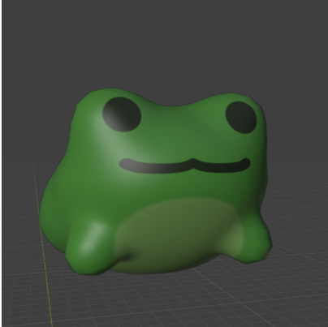
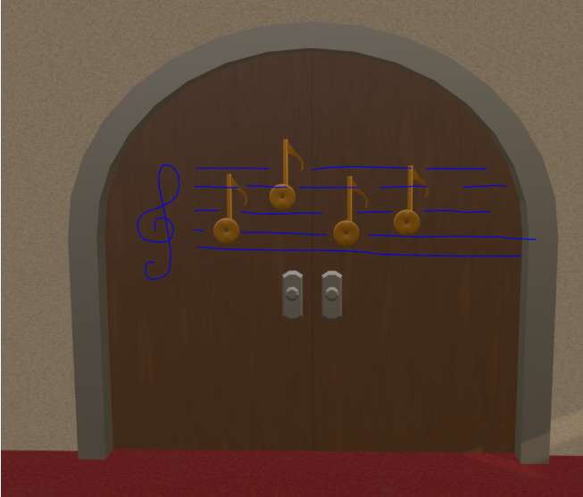
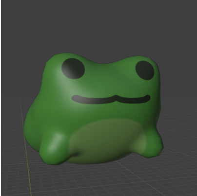
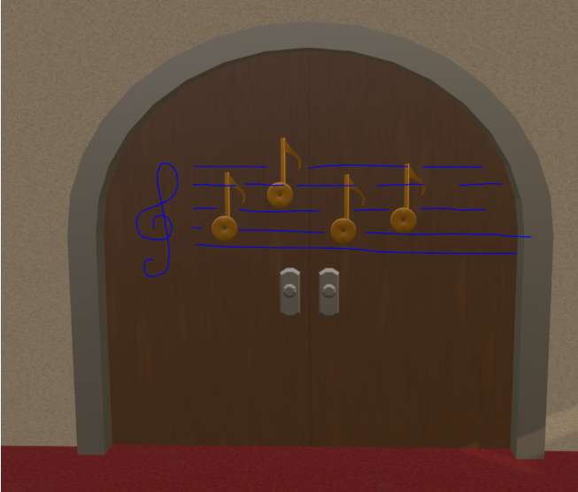
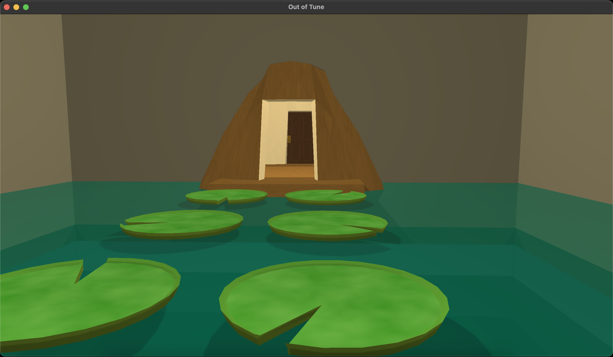
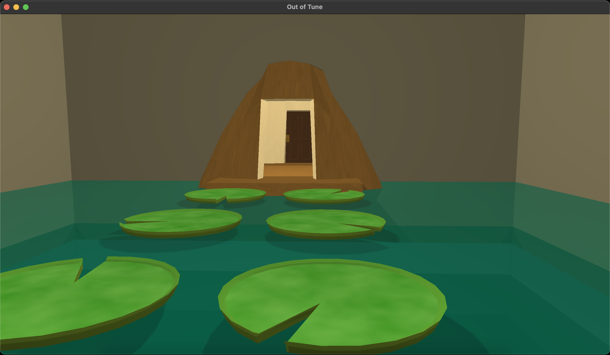

Out of Tune: Weekly Progress Report Week 8 5/19
Group Status
The swamp room assets are almost done. We have an initial version of the swamp game audio made. Swamp assets are modeled and our artists have moved on to create the other models. Audio Engine is working and we now just need to bring it into the code. First Minigame is nearing completion. The graphical room is mostly rendered just need to add in the frog models and the game implementation needs to be hooked in. Mini Game two has been started as mini game one is nearing its finialization stage. Many people are fixing and readjusting things as components are being used and incorporated many drawbacks and missing elements are being found and patched.
Screenshots
Group Morale
People are happy to see the game comming together but the stress and toll of feeling burnt out is catching up. People are feeling that they aren't doing as much work and with a few weeks left there is still a lot of work to complete. People are a bit worried and believe its time to focus and get more done.
Individual Reports
Art (Jasmine):
What were your contrete goals for the week?
Give all hotel rooms thicker walls, finish collisions for circus and piano room.
What goals were you able to accomplish?
I did finish making all the hotel rooms thicker and I started cleaning up the walls and floors for the circus and piano room. Did not finish that though. I also worked on some other props like the key, final door, frog, and some circus props.
If the week went differently than you had planned, what were the reasons? note that this happens regularly…I would prefer you to be aggressive in what you want to try accomplish rather than limit yourself to goals you know you’ll easily achieve. so answering this question is more of a reflection on the development process and the surprises you encounter, it’s not at all an evaluation.
This week I was just really out of it and I was struggling with sitting at the computer and get work done. So it’s just been an off week. I think I’m also losing focus of what should be prioritized and I keep jumping from different tasks so maybe I’ll make a priority list to keep me focused on what models should be completed first. Also because we’re getting closer to the final product, it’s harder to make final decisions on what things should look like causing some decision paralysis. I know that I still have time to change things if I don’t love them but it’s hard because I know I won’t really have time to go back and fix things so whatever I make I try to make good enough ish for the final game.
What are your specific goals for the next week?
This week I really wanna focus on the character and put other modeling to the side a little. If I procrastinate on the character longer I think I will be way off schedule later and rushed.
Goals:
- Make character model
- Start making animations
- Walk
- Idle
- Interact??
What did you learn this week, if anything (and did you expect to learn it)?
Not much really. Spent more time watching texture tutorials.
What is your individual morale (which might be different from the overall group morale)?
Tired and maybe getting burnt out but it is week 8 so it is to be expected and probably isn’t specific to this project either. But I’m glad to see my models being used by other teams and that I’ll be done with this soon. Don’t get me wrong, I do enjoy making models on blender and for this project, but this is a loooot more than I’m used to doing and a lot of staring at my screen lol.
 



Music (Annie):
What were your contrete goals for the week?
My goal is to revise the note sequence for the swamp and the ambience track so that they won’t conflict with each other.
What goals were you able to accomplish?
I finally got the audio playing in the game
If the week went differently than you had planned, what were the reasons? note that this happens regularly…I would prefer you to be aggressive in what you want to try accomplish rather than limit yourself to goals you know you’ll easily achieve. so answering this question is more of a reflection on the development process and the surprises you encounter, it’s not at all an evaluation.
What are your specific goals for the next week?
Draft a track for the clown/carnival room
What did you learn this week, if anything (and did you expect to learn it)?
I learned that I need to load in the master bank first because that is the output source for all the audio.
What is your individual morale (which might be different from the overall group morale)?
Feel more accomplished!
Graphics (Gabriel):
What were your contrete goals for the week?
My concrete goals were:
- Finish the compass
- Create a crosshair that only shows up when player looks at interactable object
- Refactor Canvas so that it may be reused for different screens aside from the game world
What goals were you able to accomplish?
I managed to finish the compass and create a “setHide” function for all canvas elements, which may be used to display or hide an element. Although, I don’t think we’ll be needing a crosshair anymore, since the current plan is to display world textures above interactable objects.
If the week went differently than you had planned, what were the reasons? note that this happens regularly…I would prefer you to be aggressive in what you want to try accomplish rather than limit yourself to goals you know you’ll easily achieve. so answering this question is more of a reflection on the development process and the surprises you encounter, it’s not at all an evaluation.
I ended up switching my goals for the week after talking to my team. I concluded that it would make more sense to focus on replacing placeholder UI assets this week than refactoring the canvas class. Namely, I changed the timer font from Arial to a digital clock font and added an 80s clock background for the timer. I also moved the compass to the top right corner of the screen, as forcing the player to dart their eyes across two opposite extremes of the screen to check their orientation/remaining time was a poor UI design choice. There are still a few adjustments that I’d like to make: the “collected keys” display is still missing and I think we can make the HUD more concise.
What are your specific goals for the next week?
- Add the keys display (will dynamically add keys as players collect them)
- Adjust the HUD layout
- Refactor Canvas so that it may be reused for different screens aside from the game world
What did you learn this week, if anything (and did you expect to learn it)?
I reflected a lot on how to create a concise information hierarchy to communicate game information effectively to the player. It’s almost a contradictory thing really. I think that if a HUD is effective, most players shouldn’t notice its effectiveness. If a HUD isn’t effective, they certainly will notice it.
What is your individual morale (which might be different from the overall group morale)?
I think I should pick up the pace. I can definitely put more hours into this project and I feel like if I don’t do it now that’ll come back to bite me later.
General Game Implementation and Mini Games (William):
What were your contrete goals for the week?
Work on our object classes on the client side so that they operate as expected in terms of models and rendering.
What goals were you able to accomplish?
Client side classes only handle the graphics and models. Used Julie’s very nice modelInstance class with our object classes. Every object class now creates a modelInstance. All modelInstances have a tree like structure where subsequent models are children of this initial model. You can currently add modelInstances of object classes to these using addVisualObject().
If the week went differently than you had planned, what were the reasons? note that this happens regularly…I would prefer you to be aggressive in what you want to try accomplish rather than limit yourself to goals you know you’ll easily achieve. so answering this question is more of a reflection on the development process and the surprises you encounter, it’s not at all an evaluation.
Again didn’t work on Audio as much as I would have liked, missed our Thursday meeting, which might’ve put me a bit behind. Not handling anything on the server side for classes atm, but hopefully I can base my work off of Ravi and Helen’s implementations of our mini game classes. Also did not work on key and lock functionality which is crucial to our game.
What are your specific goals for the next week?
We now have proximity detection, so I will work with our team to implement this into our Interactables class. We get feedback from my team about object classes as well and continue working on make sure they are integrated into our code.
What did you learn this week, if anything (and did you expect to learn it)?
Learnt a bit about glm, models and modelInstances. Implemented this into our object classes.
What is your individual morale (which might be different from the overall group morale)?
I am happy that we are all getting a lot of work to do. We only have 2-3 weeks left so now is the time to start stressing, and stress is the best motivator :).
General Game Implementation and Mini Games (Ravi):
What were your contrete goals for the week?
My concrete goals were to help finish minigame1, get the graphics implemented with it so we can actually see the gameplay, and start on minigame2.
What goals were you able to accomplish?
I was able to add the death mechanism with the water, (so you can fall through lilypads and then respawn) and I started on minigame2 because a lot of people were working on minigame 1 and I wanted to avoid unnecessary conflicts and duplicate code. Julie was handling the graphics implementation so I didn’t need to worry about that.
If the week went differently than you had planned, what were the reasons? note that this happens regularly…I would prefer you to be aggressive in what you want to try accomplish rather than limit yourself to goals you know you’ll easily achieve. so answering this question is more of a reflection on the development process and the surprises you encounter, it’s not at all an evaluation.
Overall the week went pretty well, and about what I had hoped (although minigame1 still needs a bit more work).
What are your specific goals for the next week?
Next week my goals are to get minigame 2 a good portion of the way done and start working on some of the other normal rooms.
What did you learn this week, if anything (and did you expect to learn it)?
I learned more about the different types of collisions and how best to implement interactions like falling through a lilypad. I also got more familiar with the codebase, especially Brandon’s new implementation of the Object class as a parent to all other components.
What is your individual morale (which might be different from the overall group morale)?
I am feeling pretty good about the project. I think the next couple weeks will be a lot of work, but I think we can do it.
Physics (Brandon):
What were your contrete goals for the week?
My concrete goals for the week were to complete minor physics features for minigames, implement interactivity with objects given a radius around the player, resizing AABB given rotations, and adjust the bounding boxes for the swamp room trunk. If possible, I wanted to make progress on map generation with rooms.
What goals were you able to accomplish?
I was able to complete most of my goals. The minor physics changes were for custom collisions, and having a non-colliding bounding box that only triggers custom collision. For the more complex tasks, the interactivity radius was a lot more complicated than I thought because I had to familiarize myself with the architecture of the classes. I was able to debug my rotating AABB code, and also found and resolved a bug in which diagonal movement was faster than singular direction movement (because the vectors would add together instead of normalize the total direction).
If the week went differently than you had planned, what were the reasons? note that this happens regularly…I would prefer you to be aggressive in what you want to try accomplish rather than limit yourself to goals you know you’ll easily achieve. so answering this question is more of a reflection on the development process and the surprises you encounter, it’s not at all an evaluation.
I think I overestimated myself a bit, and I was somewhat asking for it because the last week seemed like too little work. The main inhibitor to my progress is the interactivity radius because there was not much clarity with our class architecture. Even now, we still need to discuss as a group the architecture between the server and class, because I need to reference rooms on the server and Julie needs to reference them on the client. I held my progress so that we can all decide on a good architecture, because at this point there are files in the client and server that are exactly the same.
What are your specific goals for the next week?
My specific goals for next week include bounding box adjustments to the swamp room (and any surface that might be tunneled through or disjoint from the graphics) and preliminary physics for the other two minigames (cannonball and piano keys).
What did you learn this week, if anything (and did you expect to learn it)?
Architecture is extremely important to understand. I failed to communicate with Ravi and Helen about the architecture of the classes, and that impeded on my development because I was programming with incorrect assumptions. If I had hacked together some solution, that would’ve just increased the technical debt of the codebase and make development more tangled in the future.
What is your individual morale (which might be different from the overall group morale)?
I am feeling hopeful! I actually enjoy having too much on my plate, and although I wasn’t able to complete all my goals, I felt like I was doing a lot of work. I am pretty stressed with other classes, so that does make contributing to this class difficult. This has been the most successful project out of my three projects so far 🙁
General Game Implementation and Mini Games (Helen Lin):
What were your contrete goals for the week?
Change up the update method of the swamp game. Created the lilypad class server side and finish the set up on client side.
What goals were you able to accomplish?
Swamp game is changed to only send over an initial message and a message to drop a lilypad as a response of the custom collision class. Client side’s handling of the message is taken care of. Just need to make sure and test that things work. Julie got the rendering of the swamp room but now we just need to connect together the swamp room rendering and the actual graphics and test to make sure things work correctly. After team meetings one of the days, worked with Annie to see how to call the sound effects in the game and also working to resolve the few errors that came up as we were testing on hooking up the sound effects to the player’s actions
If the week went differently than you had planned, what were the reasons? note that this happens regularly…I would prefer you to be aggressive in what you want to try accomplish rather than limit yourself to goals you know you’ll easily achieve. so answering this question is more of a reflection on the development process and the surprises you encounter, it’s not at all an evaluation.
Had accidentally lost the changes that I was working on. It wasn’t at a stage of pushing so I didn’t commit. But luckily the changes weren’t a lot and I remember all the things that I had to change. So it didn’t take too long to redo the changes. Another Thing that came to mind that will need to dig into is that graphics side the location and placement of a lilypad seems to be done through using a 4x4 matrix but physics side its position is stored as a vec3. For physics to work correctly, it is likely that these two positions need to agree for things to work. Will need to connect with Julie on it
What are your specific goals for the next week?
Finish the swamp Game with communication with Julie have the graphics match the game. If Annie’s audio code is ready to merge then have audio incorporated into it. Get started on the next mini game
What did you learn this week, if anything (and did you expect to learn it)?
One thing i learned this week was about c++ circular dependencies/inclusions and how to resolve that. Made sense where we encounter the problem since needed pointers to the parent and children object in terms of hierarchy.
What is your individual morale (which might be different from the overall group morale)?
I feel like things are going good coming together. Though a little worried about whether we can finish all minigames but we have plans for it we don’t. But also minigame implementation should faster after this.
Graphics & Network (Julie):
What were your contrete goals for the week?
My main goals for the week were to extend bounding box mode to render player bounding boxes, work on the swamp room, implement a bloom effect, and finalize the shadows and lighting setups for both the swamp room and the hotel room.
What goals were you able to accomplish?
I extended bounding box mode so that it now renders player bounding boxes.
I also organized child instances within a room by type and ID, which allows us to delete a specific child dynamically–for example, a lily pad can be removed from the scene if a player steps on the wrong one.
I added lily pads to the swamp room, added lighting and shadows, and adjusted the shadows to appear lighter. I also made the water in the swamp room transparent.
I'm still experimenting with the overall lighting and shadow setup and have more work to do.
 

If the week went differently than you had planned, what were the reasons? note that this happens regularly…I would prefer you to be aggressive in what you want to try accomplish rather than limit yourself to goals you know you’ll easily achieve. so answering this question is more of a reflection on the development process and the surprises you encounter, it’s not at all an evaluation.
The week went a bit differently than I hoped because my health got worse. I couldn't stop coughing, my throat was really hurting, and I ended up getting a high fever. I went to the hospital, but it didn't help. I've been sick for a while now, and I was feeling a bit sad because I don't feel like I'm getting any better. I spent a lot of time sleeping because of the medication.
What are your specific goals for the next week?
I extended the bounding box mode so it now draws player bounding boxes. Currently, it's handled on the client side and based on the player's rotation, so it basically shows the ground truth bounding box. But I'm planning to change it so it uses the actual minCorner and maxCorner values that are calculated on the server side.
At first, I was rendering the shadow maps every frame, but that was obviously too slow, especially with multiple players. So I changed it to render each shadow map once per light, including just the static geometry for the rooms that the light affects. From there, I plan to update shadows dynamically only when needed–for example, if a player moves around the scene or a door opens.
Currently, only point lights are used for shadows, but in the swamp room, they create a circular lighting effect on the walls. I'm trying to improve how that looks and plan to try using a directional light shadows there to see if it looks better. I'm still experimenting and trying to find the best balance between good visuals and performance.
What did you learn this week, if anything (and did you expect to learn it)?
I learned that implementing shadows across different rooms involves a lot of tradeoffs between performance and visual quality.
What is your individual morale (which might be different from the overall group morale)?
I'm feeling a bit down, mostly because of my health, but I'll be okay soon!